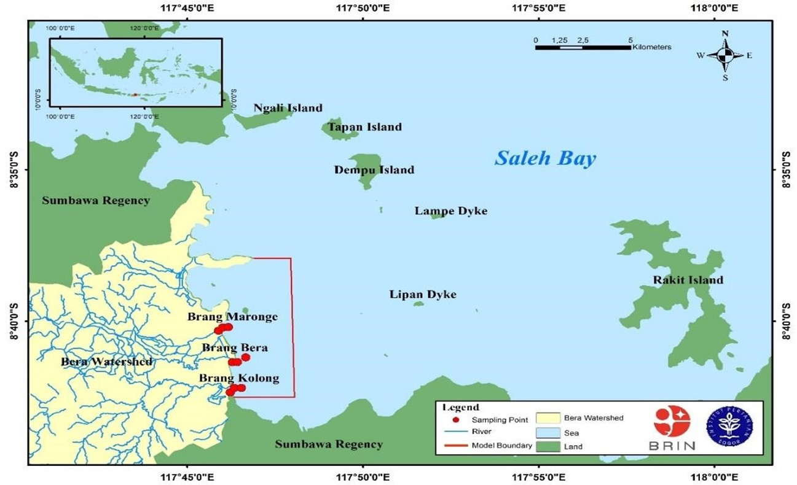

The coastal waters of Saleh Bay are heavily influenced by output from Bera Watershed, which serves as a major pathway for any kind of pollutants that discharges into the bay. There are three major rivers in this watershed, i.e.: Brang Bera, Brang Maronge, and Brang Kolong. Human activities within the watershed, including agriculture, residential settlements, and industrial operations, introduce various contaminants such as sediment, household waste, pesticides, and heavy metals. These pollutants are transported by river flow into the coastal waters of Saleh Bay, leading to water quality degradation and posing threats to coastal ecosystems (Risna et al., 2022). Addressing this environmental challenge requires comprehensive pollution source mapping within the Bera Watershed. Harianto & Efendi (2017) emphasize that such an approach would facilitate the identification of pollutant distribution patterns, pinpoint major contamination sources, and evaluate their impact on the coastal waters of Saleh Bay. This study aims to 1) map pollutant distribution sourced from Bera Watershed, 2) assess its impact on the coastal waters of Saleh Bay, and 3) evaluate its ecological consequences using a hydrodynamic modeling approach. By providing a detailed analysis of pollution dispersion, it is expected to enhance stakeholder’s understanding on ecological effects of Bera watershed to the Saleh Bay.
This study was funded by RIIM G-2/2022, BRIN - Indonesia Endowment Fund for Education Agency [LPDP]. National Research and Innovation Agency [Grant number 82/II.7/HK/2022]; Contract Number: B-1740/II.7.5/FR/11/2022 and B-15177/III.4/KS.00/11/2022. The authors also thanks to the Research Center for Conservation of Marine and Inland Water Resources, BRIN; The Government of Sumbawa Regency, Department of Marine Science and Technology, FPIK-IPB University, and Coastal Dynamics Laboratory, Directorate of Laboratory Management Research Facilities, and Science Parks and Science and Technology Parks, National Research and Innovation Agency BRIN.
This paper has been published on September 2025. Full text is available here.
The hydrodynamic and pollutant distribution modeling in this study was carried out using the MIKE 21 integrated model. The pollutant modeling process began with the development of a domain based on Flexible Mesh within the MIKE 21 software. The model consists of three main modules, namely Hydrodynamic (HD), Transport, and Ecolab, which together simulate pollutant dispersion to illustrate the distribution pattern in the coastal area of Saleh Bay (Prihantono et al., 2018). The simulation incorporated data from various tidal conditions, specifically the highest and lowest tides observed in April and September 2022. These datasets were utilized to model and predict the dispersion of organic and chemical pollutants within the coastal area of Saleh Bay. The reliability of the pollutant distribution model was assessed by comparing the simulated tide by Naotide model against actual field measurements (https://srgi.big.go.id/tides/clbi). The integration of on-site measurements with numerical modeling strengthens the reliability of the modeling approach, enabling a more precise assessment of the model and improving the accuracy of hydrodynamics model. This methodology, which aligns with validating model principles, combines by integrating field measurements and numerical modeling to develop a comprehensive understanding of hydrodynamics in the coastal area of Saleh Bay. The Naotide Model is utilized for model validation due to the limited availability of tidal data within the study area. This validation process aims to determine the RMSE, which will be employed to assess the accuracy of the MIKE 21 Integrated Model FM in simulating pollutant dispersion dynamics. The validation of tidal simulations at Calabai Station (08° 12’ 50.94” S, 117° 42’ 33.408” E) in Saleh Bay was conducted using observational tidal data and Naotide model outputs. Due to the limited availability of in situ tidal records, model validation was performed by comparing Naotide-derived tidal predictions with the available station measurements. The results indicate that the Naotide model exhibits a reasonable representation of tidal variations, with RMSE values of 0.107 in April and 0.228 in September. These validation metrics suggest that, despite data constraints, the Naotide model can be reliably utilized for tidal simulations in Saleh Bay, providing a valuable tool for hydrodynamic analysis and coastal management.
This study elucidates the dynamic interplay between bathymetry, hydrodynamics, and pollutant dispersion in the coastal waters of Saleh Bay and its implications for mariculture sustainability. The findings reveal that shallow coastal zones (5–50 m) are particularly vulnerable to pollutant accumulation due to limited water circulation and seasonal variability in wind and tidal regimes. Key pollutants, including BOD, COD, NO₃-N, and PO₄-P, were identified as primary contributors to eutrophication and ecological degradation in the bay. The Brang Bera River was found to be the dominant source of freshwater inflow and pollutant transport, owing to its highest discharge capacity among the studied tributaries. The application of MIKE 21 modeling demonstrated that pollutant concentrations were significantly influenced by tidal dynamics, with higher dispersion during peak tides and more localized accumulation during low tides. These hydrodynamic behaviors underscore the importance of integrating spatial and temporal factors in coastal water quality assessments. To mitigate the adverse effects of pollutant loading, the implementation of robust pollution control strategies is essential. These should include improved wastewater treatment systems, sustainable land-use practices, and integrated watershed management, particularly in the upstream catchment areas of the Bera Watershed. Additionally, continuous monitoring of physicochemical water quality parameters and pollutant concentrations is crucial for early detection and mitigation of environmental threats. Furthermore, the establishment of Marine Protected Areas (MPAs), coupled with environmentally sustainable mariculture practices, can enhance ecological resilience and support long-term productivity. Advanced hydrodynamic and pollutant dispersion modelling should be further utilized to inform evidence-based coastal management strategies. Lastly, fostering active stakeholder and community participation remains vital for the successful implementation of conservation initiatives and the sustainable development of coastal ecosystems in Saleh Bay.